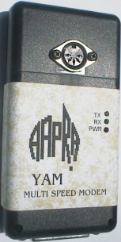

Australian
Amateur
Packet
Radio
Association
YAM Multi-speed Modem
|
 View of the AAPRA YAM modem |
AAPRA has introduced a new multi-speed modem to augment the existing
very popular BlakPak 1200 baud FSK modem.
The YAM "Yet Another Modem" was designed by Nico Palermo, IV3NWV originally
for use at 9600 baud. It wasn't long before it was realised that the design was
just as useful for 1200 baud FSK, not to mention 2400 baud FSK.
Perhaps 4800 baud is next...
How is this possible? Nico, YAM's designer has put together an excellent web site which includes information on how the chip is programmed with an amazing amount of detail. It also has the circuit diagram and files for downloading including all the drivers and configuration files. Check it out at: http://www.microlet.com/yam |
{kind=link}
The YAM modem is housed in a small black "remote control" case measuring 138mm by 70mm by 28mm. At one end is the DB25 socket for connection to the computer COM port. On one side of the case there is a 5 pin DIN socket for connection to the radio. There are also three LEDs to indicate the state of the modem. There is no power supply input as the YAM is completely powered from the COM port of the computer just like the BlakPak modem.
The AAPRA version of the YAM modem contains a number of modifications that improve the original design. The main one is the inclusion of a watchdog timer on the PTT signal allowing the modem to meet regulatory requirements for use unattended in Australia. The PTT circuit has also been changed to boost it's current sinking ability. Some changes have also been made to reduce the current consumption. These improvements are exclusive to AAPRA.
The YAM modem is assembled and fully tested "on air" by AAPRA and is supplied, together with WinPack software and drivers, an excellent manual which includes a full circuit description and cable connections for several popular radios for just $120. The modem is not available in kit form from AAPRA. We want to make it as easy to get going with the YAM as possible.
{kind=link}
View of the AAPRA YAM circuit board
Specifications for the AAPRA YAM modem
| Interface | Serial asynchronous - DB25 socket |
| Operating modes: | 1200 bps FSK |
| 2400 bps FSK | |
| 9600 bps DFM | |
| Radio interface | 5 pin DIN (TNC2 compatible) |
| Power source | Serial interface (DTR and RTS signals) |
| Current consumption | Positive rail: < 8 mA, Negative rail: < 2 mA |
| Status indicators | Power LED, Transmit data LED, Receive data LED |
| Transmit level | Adjustable from 0 to 3.6 Volts p-p |
| Receive level | 200 mVolts p-p minimum |
| Receive input impedance | > 27 kohm |
| PTT current sink | 300 mA maximum |
| PTT timer | 10 second timeout in hardware |
| Physical dimensions | 138 mm x 70 mm x 28 mm |
| Application software supplied | WinPack 6.4 |
| Driver software supplied | SV2AGW PacketEngine v.2000 |
| FPGA configuration time | < 2 seconds at 115.2 kbps |
Last update to this page: 29/2/00